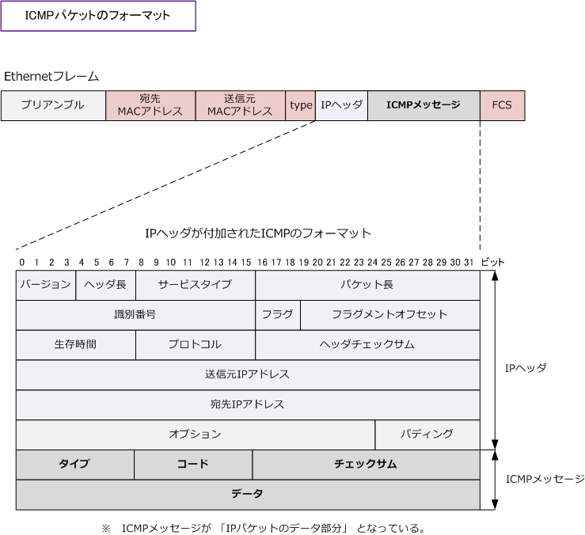

ICMP
ICMPとは
ICMP ( Internet Control Message Protocol ) は、IPプロトコルの「エラー通知」や「制御メッセージ」 を転送するためのプロトコルです。TCP/IPが実装されたコンピュータ間で、通信状態を確認するために 使用されます。 ICMPはインターネット層（OSI参照モデルのネットワーク層）で動作するプロトコルです。 ※ ネットワーク診断プログラムの ping（ピング）や traceroute（トレースルート）はこのICMPプロトコルを使用したプログラム。
ICMPのフォーマット
ICMPがネットワーク層で動作するとはいえ、下図の通り正確にはIPプロトコルの上位に位置しています。

ICMPメッセージは「タイプ」「コード」「チェックサム」「データ」の4つのフィールドにより構成。
| 各フィールド | 英語表記 | ビット数 | 各フィールドの説明 |
|---|---|---|---|
| タイプ | Type | 8 bit | ICMPメッセージの機能タイプの値が入る。値は下表を参照。 |
| コード | Code | 8 bit | ICMPメッセージの詳細な機能コードの値が入る。値は下表を参照。 |
| チェックサム | Checksum | 16 bit | エラーがないかどうかをチェック。 |
| データ | Data | 可変長 | ICMPの「タイプ」により長さが異なる。 |
ICMPの2種類のメッセージ
ICMPメッセージは大きく2種類あります。1つは問い合わせ(Query)のメッセージです。このQueryにより あるノードから特定のノードに対する通信状態を確認することができます。このQueryを利用した代表的な 通信プログラムがpingとtracerouteです。もう1つは、エラー通知（Error）のメッセージです。ノード間 の通信で経路途中でパケットが廃棄されたりした場合に、その原因を送信元のノードにエラー通知します。
| 主なICMPメッセージの「タイプ」と「コード」の組み合わせ一覧 | ||||
|---|---|---|---|---|
| タイプ | コード | 内容 | 意味 | 種類 |
| 0 ( Echo Reply ) |
0 | Echo Reply | エコー応答 | Query |
| 3 (Destination Unreachable) |
0 | Net Unreachable | 宛先ネットワークに到達できない | Error |
| 3 (Destination Unreachable) |
1 | Host Unreachable | 宛先ホストに到達できない | Error |
| 3 (Destination Unreachable) |
2 | Protocol Unreachable | プロトコルに到達できない | Error |
| 3 (Destination Unreachable) |
3 | Port Unreachable | ポートに到達できない | Error |
| 3 (Destination Unreachable) |
4 | Fragment Needed and DF was Set | パケットの分割が必要であるが 分割禁止フラグ（DF)が 立っているので、パケットを破棄 |
Error |
| 3 (Destination Unreachable) |
5 | Source Route Failed | ソースルーティングが失敗 | Error |
| 3 (Destination Unreachable) |
6 | Destination Network Unknown | 宛先ネットワークが不明 | Error |
| 3 (Destination Unreachable) |
7 | Destination Host Unkown | 宛先ホストが不明 | Error |
| 3 (Destination Unreachable) |
8 | Source Host Isolated | 送信元ホストが使用されていない | Error |
| 3 (Destination Unreachable) |
9 | Communication with Destination Network is Administratively Prohibited |
宛先ネットワークとの通信が管理上 禁止されている |
Error |
| 3 (Destination Unreachable) |
10 | Communication with Destinaltion Host is Administratively Prohibited |
宛先ホストとの通信が管理上 禁止されている |
Error |
| 3 (Destination Unreachable) |
11 | Destination Network Unreachable for ToS | 指定された優先制御値では、 宛先ネットワークに到達できない |
Error |
| 3 (Destination Unreachable) |
12 | Destination Host Unreachable for ToS | 指定された優先制御値では、 宛先ホストに到達できない |
Error |
| 3 (Destination Unreachable) |
13 | Communication Administratively Prohibited | 通信が管理上が禁止されている | Error |
| 3 (Destination Unreachable) |
14 | Host Precedence Violation | ホストの優先度が違反している | Error |
| 3 (Destination Unreachable) |
15 | Precedence cutoff in effect | 優先制御が事実上切断された | Error |
| 5 ( Redirect ) |
0 | Redirect Datagram for the Network | ネットワークへの最適経路変更を通知 | Error |
| 5 ( Redirect ) |
1 | Redirect Datagram for the Host | ホストへの最適経路変更を通知 | Error |
| 5 ( Redirect ) |
2 | Redirect Datagram for the ToS and Network | 優先制御でネットワークへの最適経路を通知 | Error |
| 5 ( Redirect ) |
3 | Redirect Datagram for the ToS and Host | 優先制御時にホストへの最適経路を通知 | Error |
| 8 ( Echo Request ) |
0 | Echo Request | エコー要求 | Query |
| 11 ( Time Exceeded ) |
0 | Time to Live exceeded in Transit | 転送中にTTLの値が超過した | Error |
| 11 ( Time Exceeded ) |
1 | Fragment Reassembly Time Exceeded | 分割パケットを組み立て中に時間が超過した | Error |